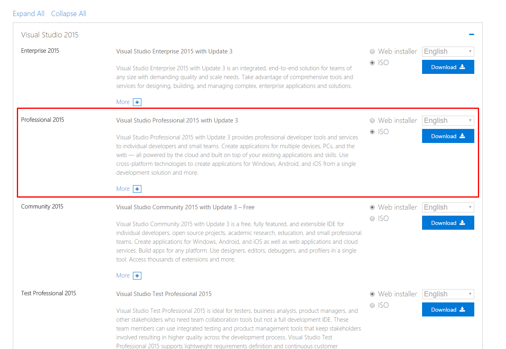

WoWonder Desktop - A Windows Messenger For WoWonder
WoWonder Desktop is a windows chat application for WoWonder social network, with WoWonder Desktop users can chat together on their PCs using our new application, now chat is faster, easier, and more fun !
WoWonder Desktop is easy, secured, and it will be regularly updated.
Download Microsoft Visual Studio 2015 Installer Projects Here.
Unzip the WoWonderDesktop archive, extract it to new folder, and then open the folder.
In the main folder you will find the solution (Name:WowonderLight Type: Microsoft Visual Studio Solution) double click on it and wait till everything is loaded.
In the Visual Studio menu bar go to Build > Clean Solution, click it and wait till it finish.
In the Visual Studio menu bar go to Build > Build Solution, click it and wait till it finish building your project.
Download Visual studio 2015 community or professional as shown below:

You can modify and edit the script as you like, for more information about changing and editing the script, please take a look at this video:
Frequently Asked Questions (FAQ)
What version does the windows desktop support?
It supports all windows versions, XP, 7, 8, 8.1, and 10.
How can i modify the style?
You can change it via your WoWonder web script admin panel.
How can i integrate my website with the Desktop messanger?
You can easily integrate it using your API key and Secret key located in your admin panel > windows app.
Didn't find your asnwer ? feel free to contact us, and we will be happy to help !